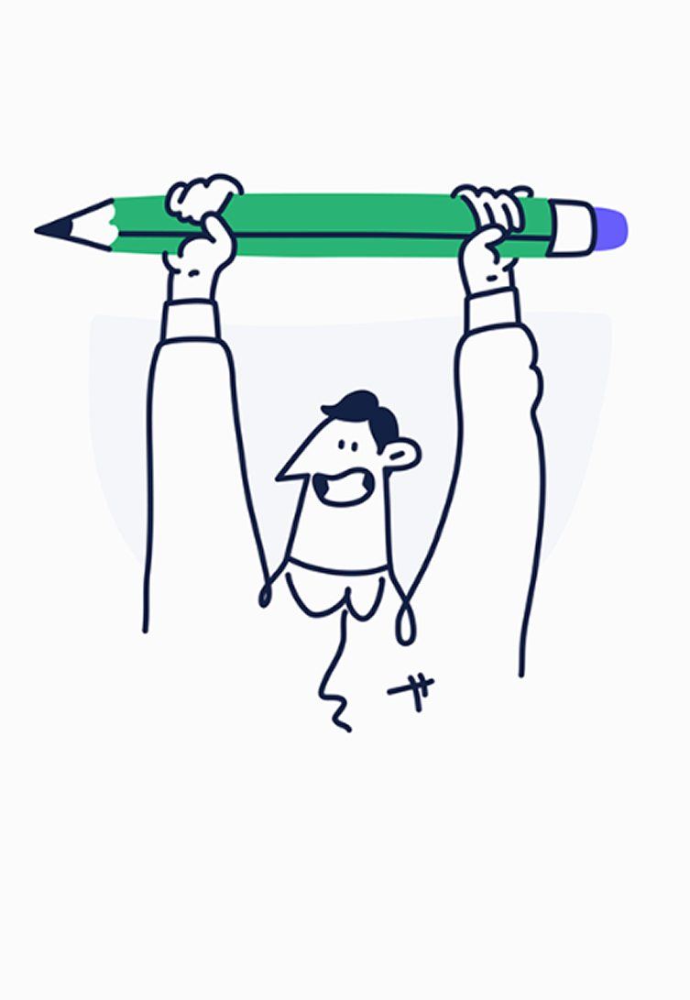
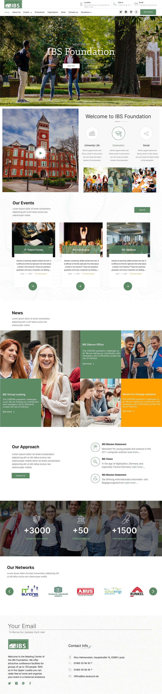
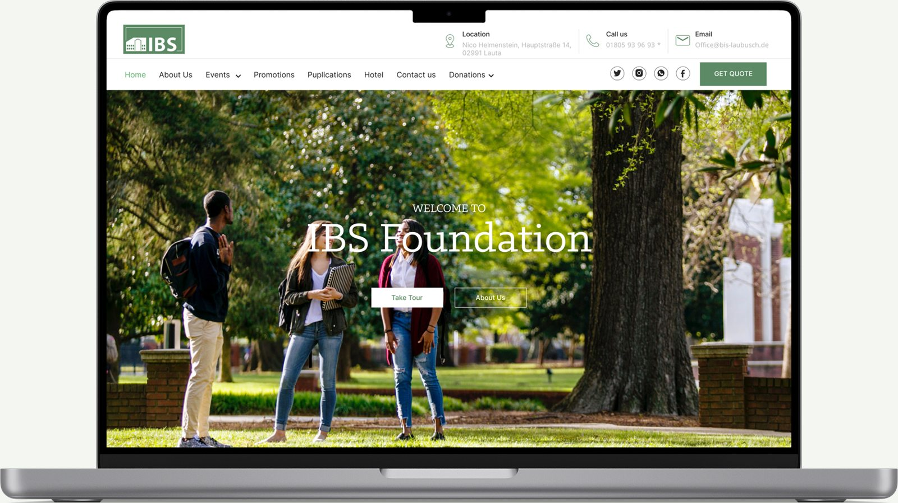
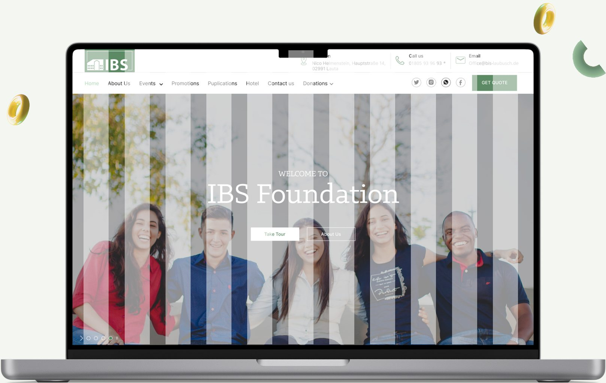
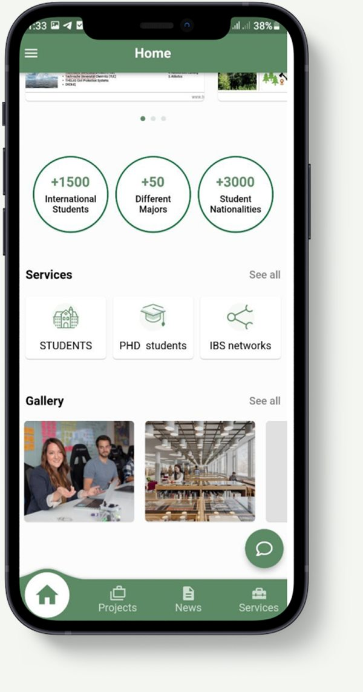
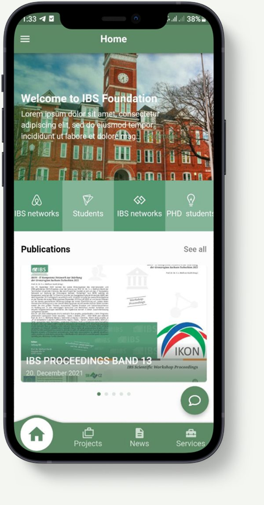
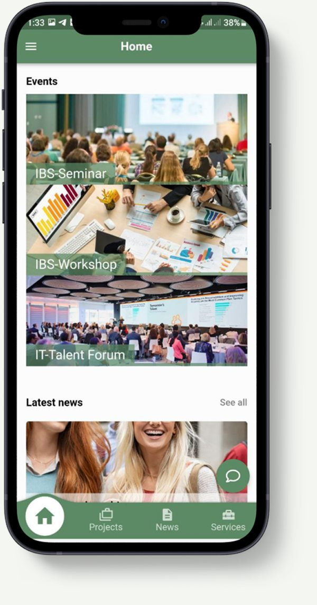
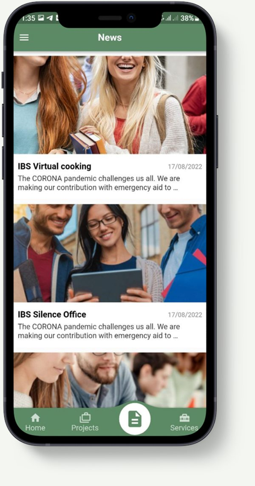
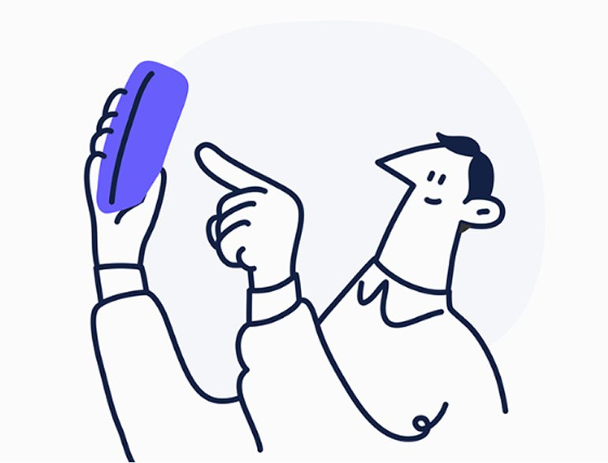

Website & mobile app UI/UX
IBS Foundation
Overview
Reliable research, made personal.
About the project
The IBS site is a free platform for students, researchers and others in academia to find and read reliable research papers in their field. This AI-powered site simplifies and optimises literature reading by building a personalised reading library based on each person’s interests. It keeps users on top of the latest academic research, with access to the most relevant scholarly articles, scientific journals, open-access papers and peer-reviewed work.

01 — The website
From grey boxes to green campus
Structure first
The wireframe fixed the order of the home page: a welcoming hero, the foundation’s story, events, the latest publications, key numbers and partner networks — before any image or colour.
- Information hierarchy
- Content blocks
- Navigation
The final page
Campus photography, a calm green palette and a classic serif give the foundation an academic, trustworthy voice, with clear paths to events, promotions, publications and donations.
- Events & seminars
- Publications
- Donations

Welcome to IBS
Two hero directions for the home page: students on campus among the trees, and a portrait of the community framed by the brand’s vertical bars.


The app in your pocket
The mobile app brings the foundation’s numbers, services, events, news and publications into a simple four-tab layout, with a chat button always within reach.





Research that finds you
Whether on a laptop in the library or on a phone between lectures, IBS keeps the newest seminars, papers and opportunities just one tap away.
Next project